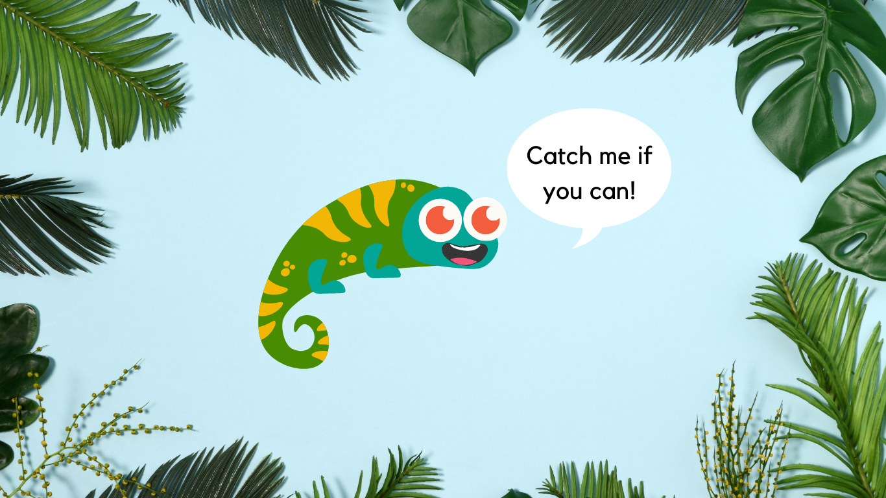

AGENDA
Over the ages, the rare and mysterious Cleo has managed to quickly camoflague itself to any background it chooses
You, the seeker, must find Cleo in each background for further study
To catch Cleo, you will point and click on wherever you think Cleo is on the image
Remember, Cleo is smart, so you have 10 tries and 1 min per level to find Cleo before it's game over
The Professor is counting on you dear Seeker, begin when ready